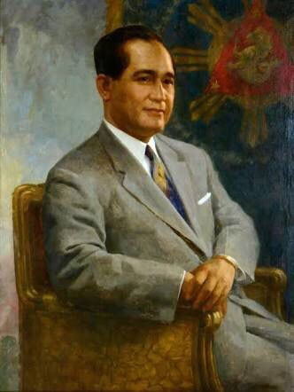

Emilio Aguinaldo was a Filipino revolutionary, statesman, and military leader who became the first president of the Philippines (1899-1901) and the first president of an Asian constitutional republic.
Manuel L. Quezon, a prominent Filipino statesman and politician, served as the first president of the Commonwealth of the Philippines from 1935 to 1944, leading the nation towards independence and facing the challenges of World War II.
José P. Laurel was a Filipino lawyer, politician, and jurist who served as the President of the Second Philippine Republic (a Japanese-sponsored government) from 1943 to 1945 during World War II.
Sergio Osmeña Sr. was a Filipino lawyer and politician who served as the fourth president of the Philippines from 1944 to 1946. He was vice president under Manuel L. Quezon.
Manuel Roxas was a Filipino lawyer and politician who served as the fifth president of the Philippines from 1946 until his death in 1948.
Elpidio Quirino was a Filipino lawyer and politician who served as the sixth President of the Philippines from 1948 to 1953. A lawyer by profession, Quirino entered politics when he became a representative of Ilocos Sur from 1919 to 1925. He was then elected as senator from 1925 to 1935.
Ramon Magsaysay, the seventh President of the Philippines, was a charismatic leader known for his humble beginnings, his focus on serving the people, and his successful efforts to combat the communist-led Hukbalahap movement.
Carlos P. Garcia was a Filipino teacher, poet, orator, lawyer, public official, political economist, guerrilla and Commonwealth military leader who was the eighth President of the Philippines from 1957 to 1961.
Diosdado Macapagal was a Filipino lawyer, poet and politician who served as the 9th President of the Philippines, serving from 1961 to 1965, and the 6th Vice President, serving from 1957 to 1961.
Ferdinand Marcos Sr. was a Filipino lawyer, politician, dictator, and kleptocrat who served as the tenth president of the Philippines from 1965 to 1986.
Corazon Aquino was the first female president of the Philippines. As president, Aquino oversaw the drafting of the 1987 Constitution, which limited the powers of the presidency and re-established the bicameral Congress, removing the previous dictatorial government structure.
Fidel V. Ramos was the only career military officer, who reached the rank of five-star general/admiral de jure. Rising from second lieutenant to commander-in-chief of the armed forces, Ramos is credited for revitalizing and renewing international confidence in the Philippine economy during his six years in office.
Joseph Estrada, also known by the nickname Erap, is a Filipino politician and former actor, who served as the 13th President of the Philippines from 1998 until his removal in 2001, the 9th Vice President of the Philippines
Gloria Macapagal, often referred to as PGMA or GMA, is a Filipino academic and politician who served as the 14th president of the Philippines from 2001 to 2010. She is the longest-serving president since Ferdinand Marcos.
Benigno Aquino III, also known as Noynoy Aquino and colloquially as PNoy, was a Filipino politician who served as the 15th President of the Philippines from 2010 to 2016.
Rodrigo Duterte is a Filipino lawyer and politician who served as the 16th president of the Philippines from 2016 to 2022. He is the chairperson of Partido Demokratiko Pilipino (formerly PDP–Laban), the ruling political party in the Philippines during his presidency. Duterte is the first president of the Philippines to be from Mindanao,[9][10] and is the oldest person to assume the office, beginning his term at age 71.
Ferdinand "Bongbong" Marcos Jr., commonly referred to by the initials PBBM or BBM, is a Filipino politician who is the 17th and current president of the Philippines. He is the second child and only son of 10th president Ferdinand Marcos and former first lady Imelda Marcos.